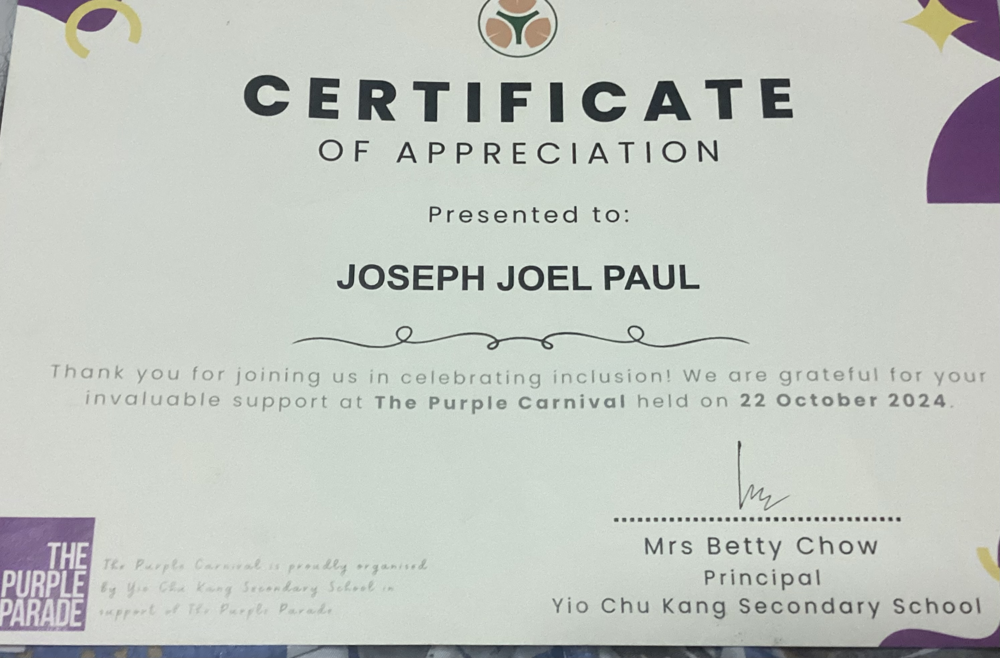
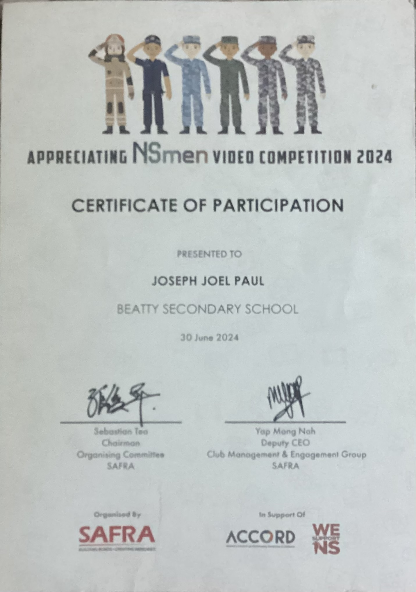
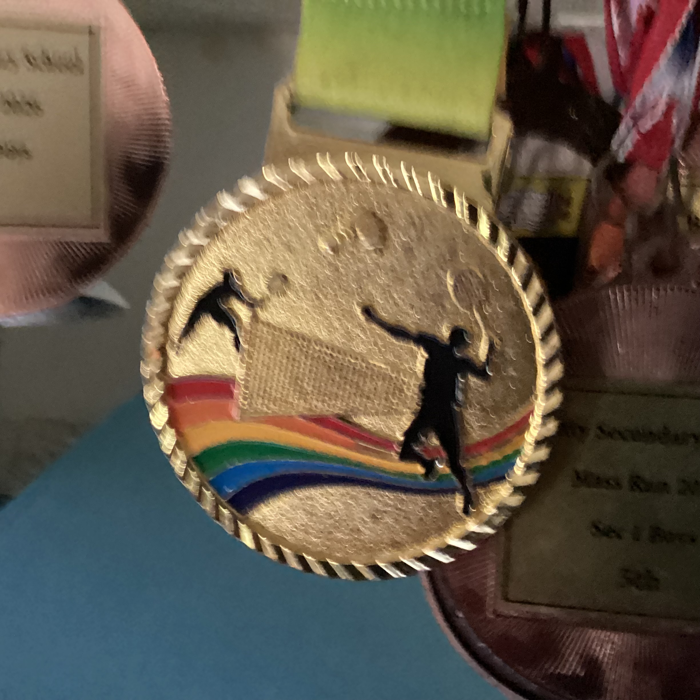
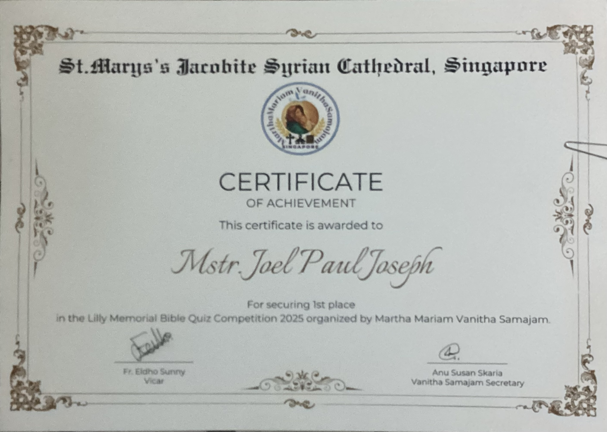
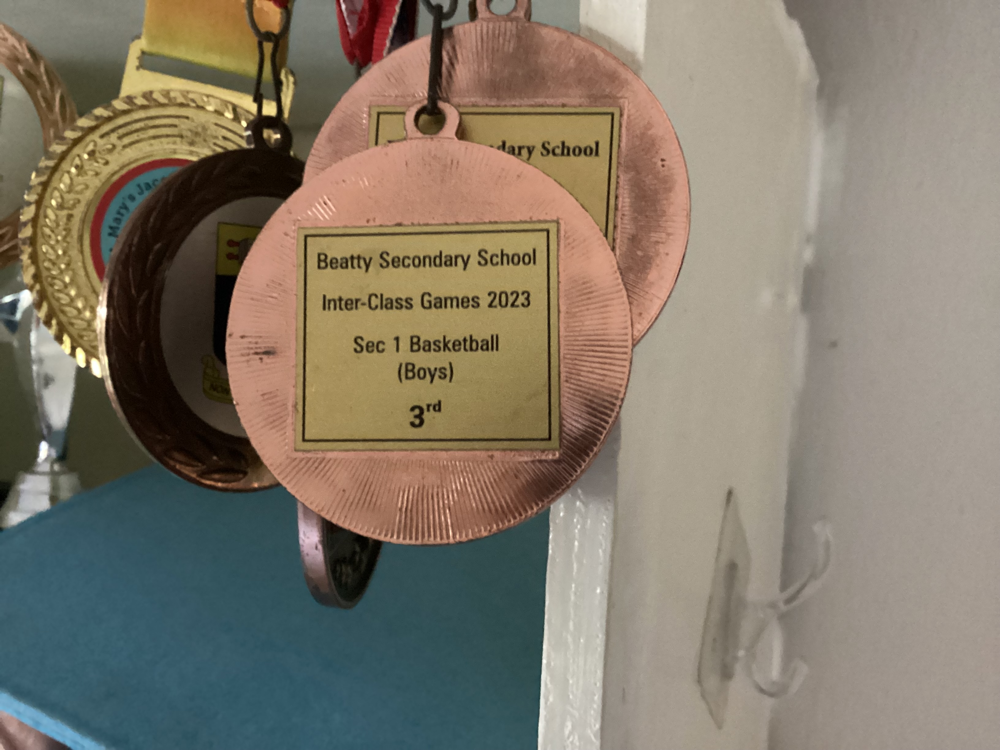
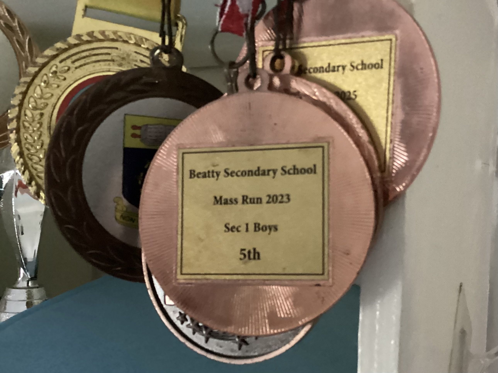
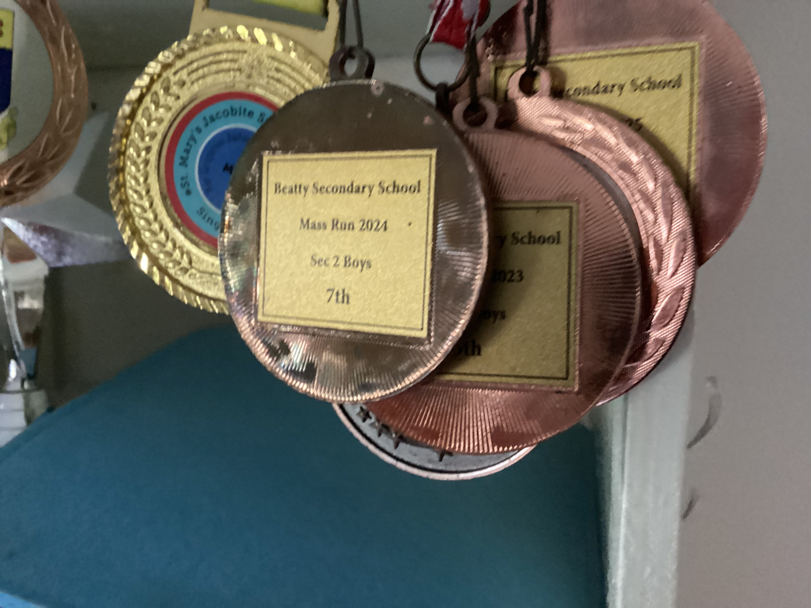
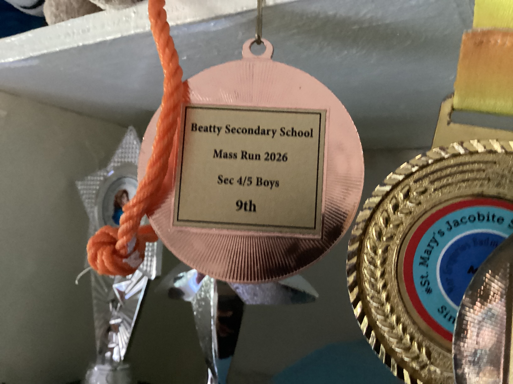
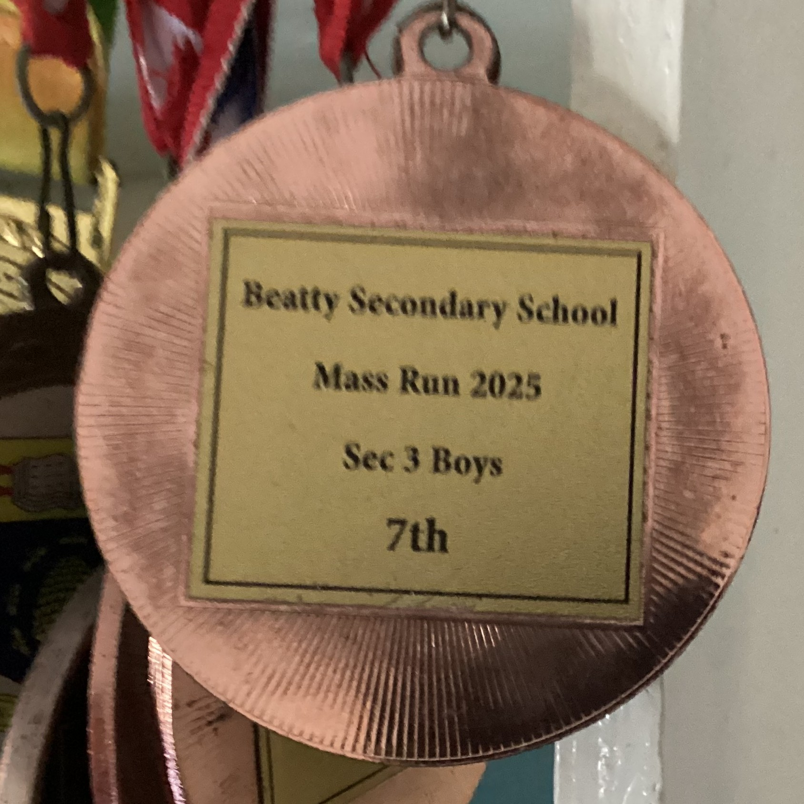
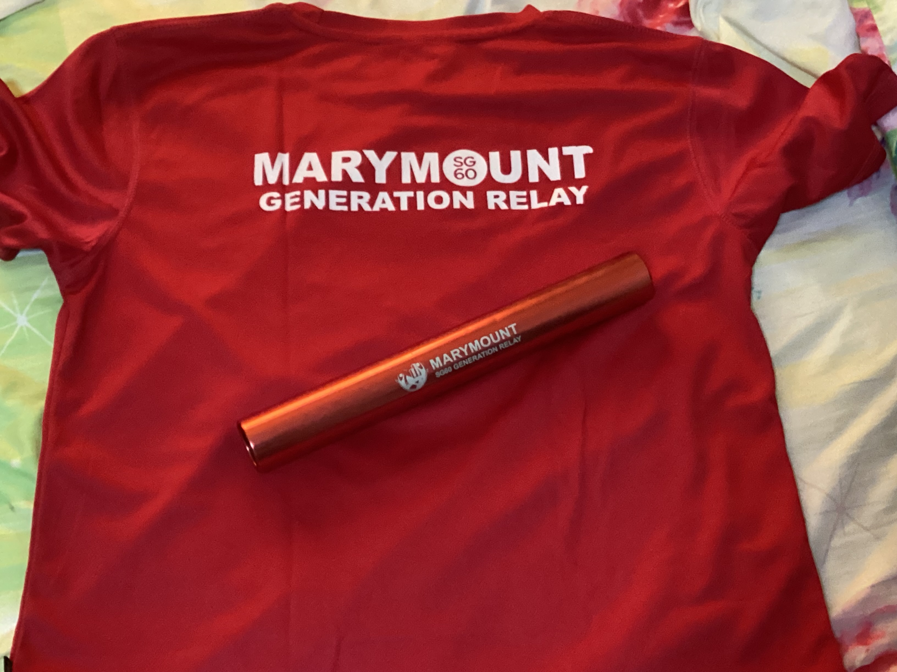

2024 - Corporal
First leadership appointment in NCC (Land), demonstrating foundational team management and discipline.










My non-academic achievements show leadership, collaboration, and a practical mindset in events, clubs, and competitive environments.
First leadership appointment in NCC (Land), demonstrating foundational team management and discipline.
Promoted to senior leadership role, overseeing team operations and mentoring junior cadets.
Digital innovation leadership, driving technology integration across school initiatives.
(3-3) Animal Awareness initiative - 8 hours, 2025. Participant in values-in-action community service.
Active participation in Annual Awards Parade, National Day Observance, Generation Relay, and Open House activities.
Lower Sec Sports Leader (2024), mentoring peers and supporting athletic programs.
Led school teams and supported peers through workshops and events.
Achieved 107th and 86th place in debut FLL competitions.
Participated in Purple Carnival, SAFRA video competitions, and volunteer work.
Medalled at the Beatty Mass Run every year: 5th (Sec 1, 2023), 7th (Sec 2, 2024), 7th (Sec 3, 2025), and 9th (Sec 4/5, 2026).